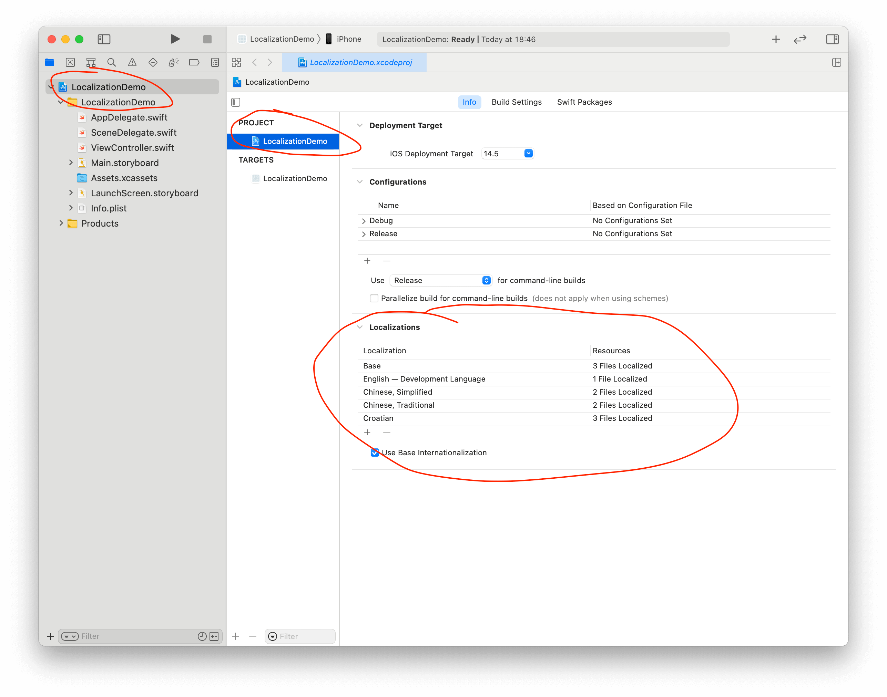
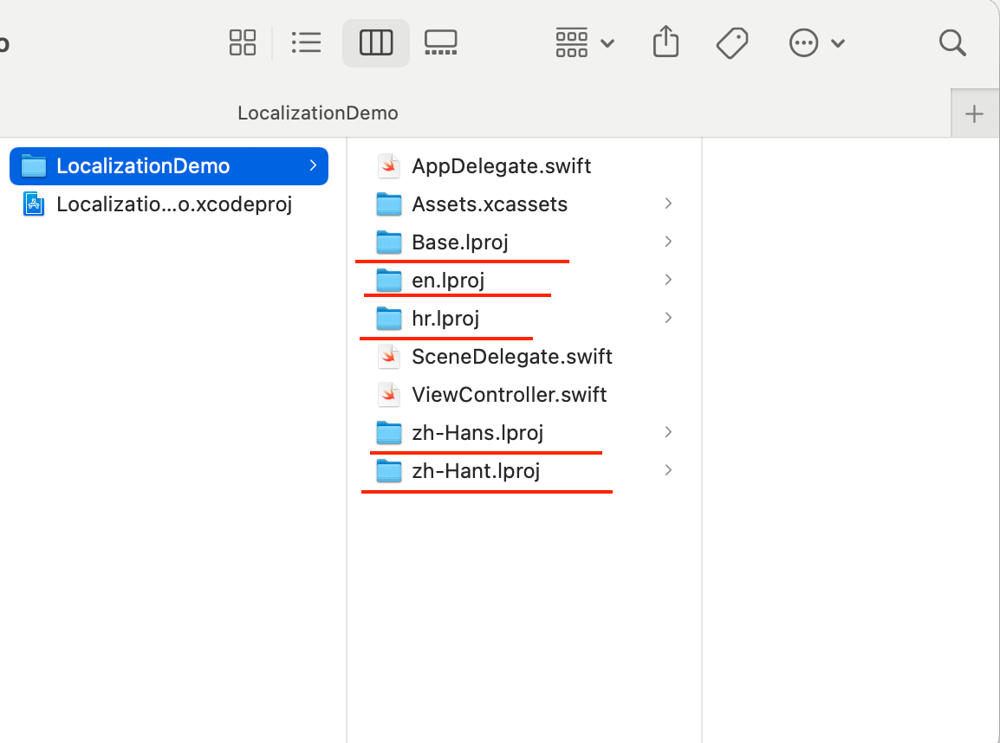
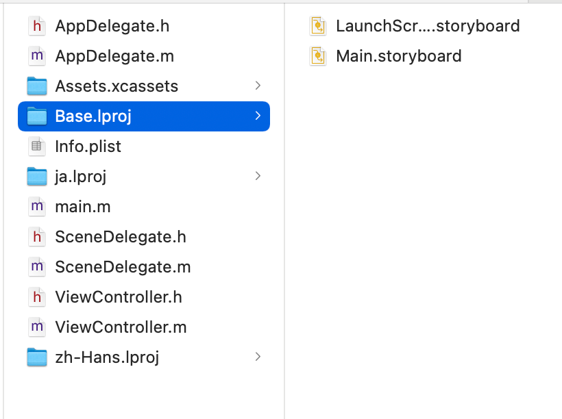
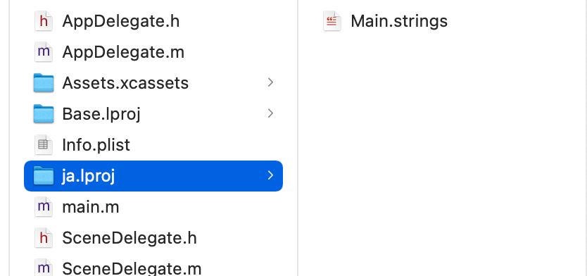
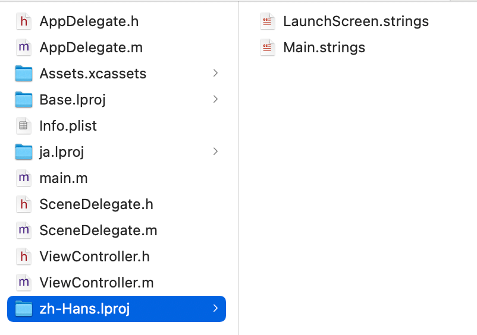

Xcode在提供给开发者方便好用的自动国际化方案的同时也提供了手动管理多语言文件的方案，手动管理方案虽然使用步骤更多但是更好理解。
这篇文章主要包括下面几点方面：
- 怎么创建每个语言对应的文件夹和文件夹里面包含的文件
genstrings工具的使用方法- 使用
ibtool更新xib、storyboard的多语言文件 Xcode在提供给开发者方便好用的自动国际化方案的同时也提供了手动管理多语言文件的方案，手动管理方案虽然使用步骤更多但是更好理解。
这篇文章主要包括下面几点方面：
- 怎么创建每个语言对应的文件夹和文件夹里面包含的文件
genstrings工具的使用方法- 使用
ibtool更新xib、storyboard的多语言文件
到公众号【iOS开发栈】学习更多SwiftUI、iOS开发相关内容。
创建多语言文件夹
通过在Xcode项目的Project中添加Locations语言后，对应语言的文件夹就会出现在项目的文件夹目录中了。
 
可以看到这里的多语言文件夹都是以.lproj为后缀，个数和支持的语言个数相同，并且是以语言的ID（在添加语言时括号里面的内容）为前缀。
  
在自动生成的多语言文件夹中，Base.lproj包含LaunchScreen.storyboard和Main.storyboard两个文件，而在其他多语言文件中包含着在添加多语言时选择的要进行多语言的.storyboard文件并命名为.strings。
对用户可见字符串进行国际化
上一步中通过添加不同的语言后Xcode自动生成了对应语言的.lproj文件夹来存放对应语言的翻译资源，但是到目前为止文件夹中只有storyboard中包含的文本。
为开发语言（Base）生成Localizable.strings多语言文件
在标记需要本地化的文本中通过使用NSLocalizedString宏把一些用户可见的字符串进行了标记，之后通过Xcode的自动多语言导出、导入来生成不同的多语言文本。
手动生成多语言也是需要先通过NSLocalizedString宏或其变体对文本进行标记。
NSLocalizedString(@"Official Account", @"This is a title");
Official Account会作为key出现在每一个语言的文件中，而This is a title是这条翻译的一个注释方便理解。
标记过需要翻译的内容后使用genstrings工具生成Localizable.strings:
cd [Project folder]
find . -name *.m | xargs genstrings -o Base.lproj
- 打开终端并使用
cd命令进入当前项目的目录（.lproj文件夹所在的目录） find . -name *.m找出所有Objc项目的实现文件，所有用户可见的文本都在.m文件中- 调用
genstrings命令并将最终结果输出(- o)到Base.lproj文件夹中
会发现，Base.lproj文件夹中多了一个Localizable.strings，并且这个文件中包含多语言文本：
// Base.lproj中的Localizable.strings文件
/* This is a title */
"Official Account" = "Official Account";
为其他语言创建多语言文件
- 使用Xcode打开项目后，右击目录树选择
Add file to “[项目名]”并选择Localizable.strings文件。 - 选中添加到目录树中的
Localizable.strings文件，点击Xcode右上角的File Inspector，并在Localization中添加语言。 Localizable.strings会成为文件夹的结构，展开后可以看到各个语言对应的文本。并且每个文件中都包含上一步中添加的“Official Account”键值对。
使用ibtool更新xib/storyboard多语言
当添加、删除IB（xib或者storyboard）文件中的视图时，对应多语言文件的内容不会自动跟着变化，此时可以使用ibtool工具来进行更新操作。
ibtool [MyNib].xib --generate-strings-file [MyNib_new.strings]
ibtool的第一个参数是IB文件的路径，“[MyNib_new.strings]”表示一个多语言文件。下面是一个例子：
$ ibtool Base.lproj/Main.storyboard --generate-strings-file zh-Hans.lproj/Main.strings
$ ibtool Base.lproj/Main.storyboard --generate-strings-file en.lproj/Main.strings
把Main.storybaord进行国际化，它的目录是在Base.lproj中，先后生成了简体中文和英文两个多语言文件。
// en.lproj/Main.strings
/* Class = "UIButton"; normalTitle = "New Button"; ObjectID = "j5H-7t-MJu"; */
"j5H-7t-MJu.normalTitle" = "New Button";
/* Class = "UIButton"; normalTitle = "This is a Button"; ObjectID = "mM3-Pc-ngE"; */
"mM3-Pc-ngE.normalTitle" = "This is a Button";
当增加、删除IB文件中的内容后再次执行上面的命令后，Main.strings文件会把对应的视图多语言文本进行删除或者添加。
到公众号【iOS开发栈】学习更多SwiftUI、iOS开发相关内容。
总结
这篇文章讨论了手动管理多语言文件的方案，大部分内容参考自官方文档Managing Strings Files Yourself，希望能够对你有帮助。🙏